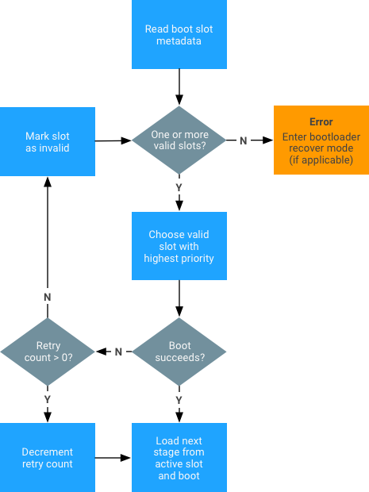

OEMs and SoC vendors who want to implement A/B system updates must ensure their bootloader implements the boot_control HAL and passes the correct parameters to the kernel.
Implementing the boot control HAL
A/B-capable bootloaders must implement the boot_control HAL at
hardware/libhardware/include/hardware/boot_control.h.
You can test implementations using the
system/extras/bootctl utility and
system/extras/tests/bootloader/.
You must also implement the state machine shown below:
Setting up the kernel
To implement A/B system updates:
- Cherrypick the following kernel patch series (if needed):
- If booting without ramdisk and using "boot as recovery", cherrypick android-review.googlesource.com/#/c/158491/.
- To set up dm-verity without ramdisk, cherrypick android-review.googlesource.com/#/q/status:merged+project:kernel/common+branch:android-3.18+topic:A_B_Changes_3.18.
- Ensure kernel command line arguments contain the following extra arguments:
... where theskip_initramfs rootwait ro init=/init root="/dev/dm-0 dm=system none ro,0 1 android-verity <public-key-id> <path-to-system-partition>"<public-key-id>value is the ID of the public key used to verify the verity table signature (for details, see dm-verity). - Add the .X509 certificate containing the public key to the system keyring:
- Copy the .X509 certificate formatted in the
.derformat to the root of thekerneldirectory. If the .X509 certificate is formatted as a.pemfile, use the followingopensslcommand to convert from.pemto.derformat:openssl x509 -in <x509-pem-certificate> -outform der -out <x509-der-certificate>
- Build the
zImageto include the certificate as part of the system keyring. To verify,check theprocfsentry (requiresKEYS_CONFIG_DEBUG_PROC_KEYSto be enabled):angler:/# cat /proc/keys 1c8a217e I------ 1 perm 1f010000 0 0 asymmetri Android: 7e4333f9bba00adfe0ede979e28ed1920492b40f: X509.RSA 0492b40f [] 2d454e3e I------ 1 perm 1f030000 0 0 keyring .system_keyring: 1/4
Successful inclusion of the .X509 certificate indicates the presence of the public key in the system keyring (highlight denotes the public key ID). - Replace the space with
#and pass it as<public-key-id>in the kernel command line. For example, passAndroid:#7e4333f9bba00adfe0ede979e28ed1920492b40fin place of<public-key-id>.
- Copy the .X509 certificate formatted in the
Setting build variables
A/B-capable bootloaders must meet the following build variable criteria:
| Must define for A/B target |
/device/google/marlin/+/android-7.1.0_r1/device-common.mk.
You can optionally conduct the post-install (but pre-reboot) dex2oat step
described in Compiling.
|
Cannot define for A/B target |
|
|---|---|
| Optional for debug builds | PRODUCT_PACKAGES_DEBUG += update_engine_client |
Setting partitions (slots)
A/B devices do not need a recovery partition or cache partition because
Android no longer uses these partitions. The data partition is now used for the
downloaded OTA package, and the recovery image code is on the boot partition.
All partitions that are A/B-ed should be named as follows (slots are always
named a, b, etc.): boot_a,
boot_b, system_a, system_b,
vendor_a, vendor_b.
Cache
For non-A/B updates, the cache partition was used to store downloaded OTA packages and to stash blocks temporarily while applying updates. There was never a good way to size the cache partition: how large it needed to be depended on what updates you wanted to apply. The worst case would be a cache partition as large as the system image. With A/B updates there's no need to stash blocks (because you're always writing to a partition that isn't currently used) and with streaming A/B there's no need to download the whole OTA package before applying it.
Recovery
The recovery RAM disk is now contained in the boot.img file.
When going into recovery, the bootloader cannot put the
skip_initramfs option on the kernel command line.
For non-A/B updates, the recovery partition contains the code used to apply
updates. A/B updates are applied by update_engine running in the
regular booted system image. There is still a recovery mode used to implement
factory data reset and sideloading of update packages (which is where the name
"recovery" came from). The code and data for recovery mode is stored in the
regular boot partition in a ramdisk; to boot into the system image, the
bootloader tells the kernel to skip the ramdisk (otherwise the device boots into
recovery mode. Recovery mode is small (and much of it was already on the boot
partition), so the boot partition doesn't increase in size.
Fstab
The slotselect argument must be on the line for
the A/B-ed partitions. For example:
<path-to-block-device>/vendor /vendor ext4 ro wait,verify=<path-to-block-device>/metadata,slotselect
No partition should be named vendor. Instead, partition
vendor_a or vendor_b will be selected and mounted on
the /vendor mount point.
Kernel slot arguments
The current slot suffix should be passed either through a specific device
tree (DT) node (/firmware/android/slot_suffix) or through the
androidboot.slot_suffix command line argument.
By default, fastboot flashes the current slot on an A/B device. If the update package also contains images for the other, non-current slot, fastboot flashes those images as well. Available options include:
--slot SLOT. Override the default behavior and prompt fastboot to flash the slot that is passed in as an argument.--set-active [SLOT]. Set the slot as active. If no optional argument is specified, then the current slot is set as active.fastboot --help. Get details on commands.
If the bootloader implements fastboot, it should support the command
set_active <slot> that sets the current active slot
to the given slot (this must also clear the unbootable flag for that slot and
reset the retry count to default values). The bootloader should also support the
following variables:
has-slot:<partition-base-name-without-suffix>. Returns “yes” if the given partition supports slots, “no” otherwise.current-slot. Returns the slot suffix that will be booted from next.slot-count. Returns an integer representing the number of available slots. Currently, two slots are supported so this value is2.slot-successful:<slot-suffix>. Returns "yes" if the given slot has been marked as successfully booting, "no" otherwise.slot-unbootable:<slot-suffix>. Returns “yes” if the given slot is marked as unbootable, "no" otherwise.slot-retry-count. Number of retries remaining to attempt to boot the given slot.
To view all variables, run
fastboot getvar all.
Generating OTA packages
The OTA package tools follow the
same commands as the commands for non-A/B devices. The
target_files.zip file must be generated by defining the build
variables for the A/B target. The OTA package tools automatically identify and
generate packages in the format for the A/B updater.
Examples:
- To generate a full OTA:
./build/tools/releasetools/ota_from_target_files \ dist_output/tardis-target_files.zip ota_update.zip
- To generate an incremental OTA:
./build/tools/releasetools/ota_from_target_files \ -i PREVIOUS-tardis-target_files.zip \ dist_output/tardis-target_files.zip incremental_ota_update.zip
Configuring partitions
The update_engine can update any pair of A/B partitions defined
in the same disk. A pair of partitions has a common prefix (such as
system or boot) and per-slot suffix (such as
_a). The list of partitions for which the payload generator defines
an update is configured by the AB_OTA_PARTITIONS make variable.
For example, if a pair of partitions bootloader_a and
booloader_b are included (_a and _b are
the slot suffixes), you can update these partitions by specifying the following
on the product or board configuration:
AB_OTA_PARTITIONS := \ boot \ system \ bootloader
All partitions updated by update_engine must not be modified by
the rest of the system. During incremental or delta updates, the binary
data from the current slot is used to generate the data in the new slot. Any
modification may cause the new slot data to fail verification during the update
process, and therefore fail the update.
Configuring post-installation
You can configure the post-install step differently for each updated
partition using a set of key-value pairs. To run a program located at
/system/usr/bin/postinst in a new image, specify the path relative
to the root of the filesystem in the system partition.
For example, usr/bin/postinst is
system/usr/bin/postinst (if not using a RAM disk). Additionally,
specify the filesystem type to pass to the mount(2) system call.
Add the following to the product or device .mk files (if
applicable):
AB_OTA_POSTINSTALL_CONFIG += \ RUN_POSTINSTALL_system=true \ POSTINSTALL_PATH_system=usr/bin/postinst \ FILESYSTEM_TYPE_system=ext4
Compiling
For security reasons, system_server cannot use
just-in-time (JIT) compilation.
This means you must compile ahead of time odex files for
system_server and its dependencies at a minimum; anything else is
optional.
To compile apps in the background, you must add the following to the product's device configuration (in the product's device.mk):
- Include the native components in the build to ensure compilation script and
binaries are compiled and included in the system image.
# A/B OTA dexopt package PRODUCT_PACKAGES += otapreopt_script
- Connect the compilation script to
update_enginesuch that runs as a post-install step.# A/B OTA dexopt update_engine hookup AB_OTA_POSTINSTALL_CONFIG += \ RUN_POSTINSTALL_system=true \ POSTINSTALL_PATH_system=system/bin/otapreopt_script \ FILESYSTEM_TYPE_system=ext4 \ POSTINSTALL_OPTIONAL_system=true
For help installing the preopted files in the unused second system partition, refer to First boot installation of DEX_PREOPT files.